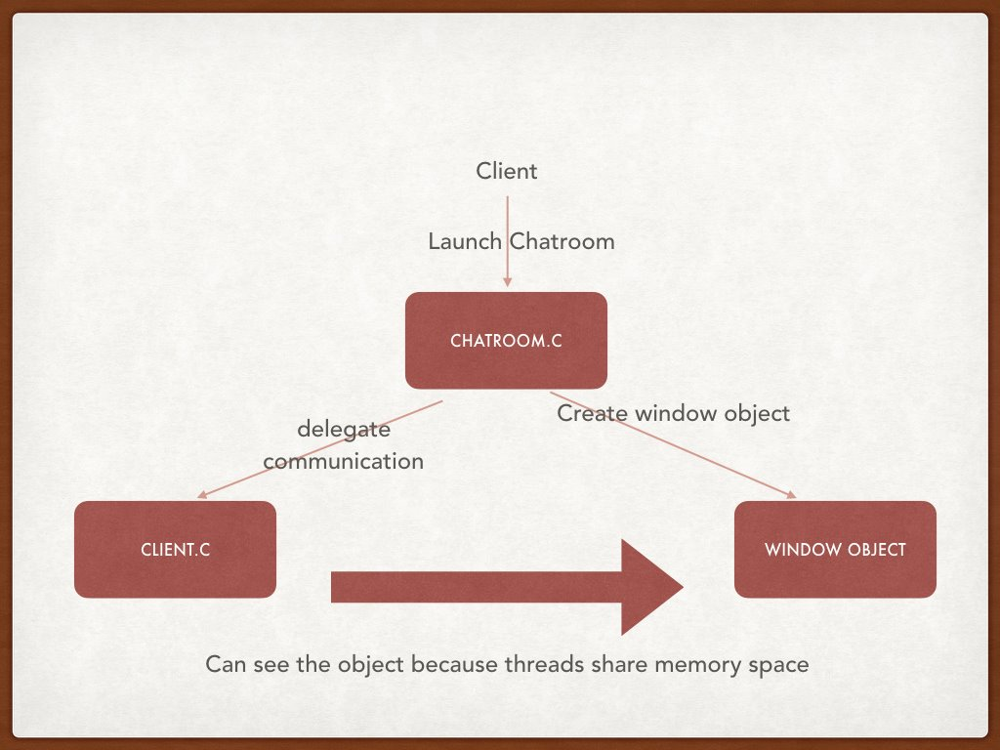
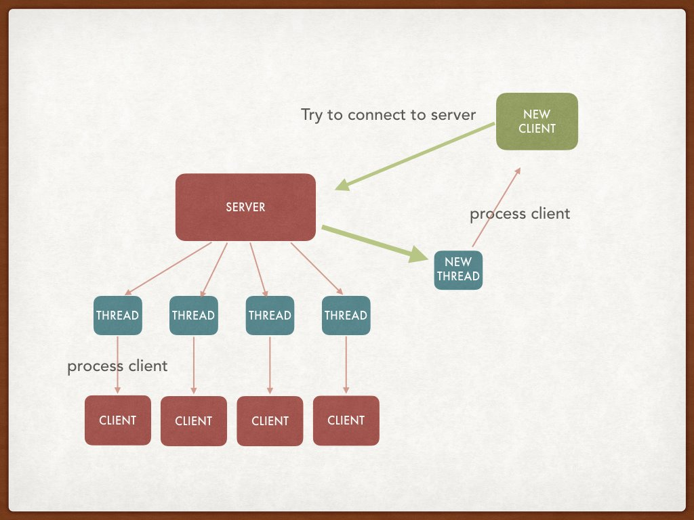

Learning Objectives#
- Networking Components
- Building working server code
- Building working client code
- Network error handling
- Read/Write error handling
Goal#
The goal of this lab is to help you understand networking components. You will accomplish this by writing a real chatroom program. You are going to write a client which can send/receive data to/from server, a server which can receive data from multiple clients and broadcast these messages to each of the clients, and read/write functions than handle the failures of read and write. The files you must modify are
- client.c
- server.c
- utils.c
The files client.c and server.c provide an outline of what you are expected to do via references to questions in questions.txt. For example, if you see /QUESTION 1/ then question 1 in questions.txt should help you understand what to do when filling that part of the code.
So be sure to answer the questions in questions.txt to begin with as these will help you get started!
Client#
The file chat_window.c is the control center for setting up the ncurses windows (that’s a thing). You do not need to worry about this, but feel free to look at it if you are interested.
The client executable will accept up to four arguments:
./client <host> <port> <username> [filename]
-
host- The address the client should connect to. -
port- The port number to connect to the host on. -
username- The name you want to be displayed in the chatroom. -
filename- Optional argument - will disable ncurses and write bytes received from the server to the output file.
The client performs two main functions: (1) writes user input to the server and (2) writes bytes from server to user. We have handled the overall logic of reading from user, writing to server, reading from server, and writing to user. Your job is to set up the client and connect it to the server.
Implement the provided function to use a TCP IPv4 connection and connect to the host at the given port. A signal interrupt will be sent to the client as a flag to tell your client to exit. To be precise, when your client program receives a SIGINT it should free memory, close sockets, and gracefully exit the program.
Notice the writing and reading to the server use write_all_to_socket() and read_all_from_socket(). You will have to implement these functions to handle the failures of read/write calls, but more on that later.
The figure below gives you an idea about how the client side architecture looks like: 
So to sum up, your job in the client program is:
- Implement the running client and closing client functions
- Set up the network connection (TCP + IPv4).
- Launch threads to read from the server.
- Launch threads to write to server.
- Free memory you allocate.
Note: You do not need to modify any of the code in client.c except for the function connect_to_server() and close_server_connection() in order to get the client successfully working. However, you may modify any of the other code if you want, but be careful.
Server#
./server <port>
- port - The port number to accept connections on.
Similar to client.c, a lot of the functionality in server.c has been implemented for you. Your job is to set up the server to use TCP IPv4 with reusable ports and gracefully close the server when SIGINT is received.
The figure below illustrates how a message propagates through the system: 
To sum up, you have to:
- Implement
run_server()andclose_server()(the signal handler for SIGINT) - Set up connections (TCP & IPv4).
- (There is a giant while-loop - you need to do something in it)
Here is the overall client-server architecture:

Read/Write Failures#
Read and Write calls (general read/write - this extends to recv, send, etc.) can fail to send/receive all bytes. Here is the pseudocode for read all to socket.
while number of bytes is not the number needed:
return_code = read bytes from socket
if return_code = 0: //what does it mean for read to return 0?
return something
else if return_code > 0:
add return_code bytes to counter
else if return_code == -1 and error was interrupted:
try again
else: //return_code == -1, and error is something else
//you may want to handle some other errors here
return something
return bytes read
The something you would return here will depend on the needs of your code. For example, if you care about the partial message received before failure occurs, you would return the number of bytes read. If, however, you only care about full messages, and choose to disregard any incomplete messages, you would have a different choice of return values. Also, there are a wide variety of possible failures for read() and write() (and other system calls in general). Perhaps, you may want to handle a different error code as well
In utils.c/h we have declared the functions read_all_from_socket and write_all_to_socket. You need to implement these functions to read/write from/to a socket and handle the failures of read/write (defined above). You should look at utils.h for detailed info on what your functions should do and what they should return.
Messages in our server/client will be exchanged in the following format:
<message_size><message>
informally: 0x0000000C"hello world\n"
where the first 4 bytes of the message indicate the size of the message in bytes.
We use network-to-host byte-order (ntohl) and host-to-network byte-order (htonl) for this.
We’ve given you get_message_size(), you must implement write_message_size(). As we will be testing your server and client separately, and because our server and client expect this setup, be sure this works; it is like our “protocol”.
Please see how get_message_size() it is done in utils.c
In user_hooks.c we have given an example of how to emulate a read failure (feel free to modify this file by adding a write failure call). You can include user_hooks.h in your utils/server/client code to test your error handling.
BE SURE NOT TO LEAVE ANYTHING RELATING TO user_hooks IN YOUR FILES. THEY ARE THERE FOR TESTING, THE AG WILL NOT COMPILE THEM
Error Checking#
Networks Break!
Many things can go wrong when working with networks. Be sure to do plenty of error checking! If anything fails, print the error message and exit(1). For each networking function call (except one of them) that you will be using, use perror(NULL). For the one that you cannot use perror, use the man pages to learn how to print the error. You must figure out which function does not set errno upon failure and thus you cannot use perror.
Testing#
You should implement tests for testing functionality of client and server side code separately. That way you don’t worry about client-server interactions. You can then consider cases where a message is written to one client, is sent to the server and is then broadcasted to all the other clients running. To test such a code path, you start a test that writes to one of the clients c and then verifies whether all the clients have received the message that was provided as input to c.
Note, you are writing a server that could potentially run for a long time. This is exactly a scenario where memory leaks can be very costly and cause your server to crash. So ensure there are no memory leaks in your implementation.
Otherwise, we will leave it open ended to let you come up with other interesting test cases.
We provided you with a Makefile.
You can run the client and server as follows:
./client <address> <port> <username> [filename]
./server <port>
Test your server and client with a friend! On your VMs you can connect to each others’ machines. Just ask them what their machine number is!
./server 12345
Waiting for connection...
Connection made: client_fd=4
^CEnding Server
./client fa19-cs241-XYZ.cs.illinois.edu 12345 steve
steve: hello there!
alec: sending bytes
^CClosing Client
Notice the XYZ, that is the machine number you will use to connect to the server (the person hosting’s machine) In the above “terminals”, there are things like “Waiting for connection…” and “Ending Server”: do not worry about having to do this. It is simply flavor text printed to the window. Feel free to do that; we will only test the bytes that are sent and received. Because it’s particularly important for this lab, we want to reiterate that you should not have any memory leaks :)
Grading#
- Client must function as specified
- Server must function as specified
- Implementation of
read_all_from_socketandwrite_all_from_socketto handle failures - Errors must be handled as specified
- No memory leaks
Once again, you do not need to modify any of the provided code in order to complete the lab, but you can if you want (however, be very careful; we are not responsible for your changes )
Interesting Things#
We are using pthread_cancel, pthread_detach, pthread_cleanup, and ncurses. It is not necessary to know about these (actually cancel might have been on one of your quizzes), so don’t let them distract/confuse you. However, if you are interested, definitely read up on them.
In the Makefile, we have -I./includes. This lets you do #include "something.h" instead of #include "./includes/something.h"
Also #pragma once in the .h files